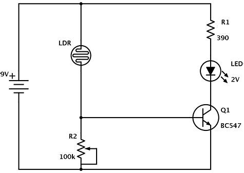

This is a page to list our boards requirments for graduation.
1. Design and complete robotic and embedded systems solutions that address real-world situations and challenges.
Artifact 1
this will talk about my first artifact. link to my youtube video link to my Github for the code

sample circuit diagram
2. Demonstrate embedded microprocessor system skills such as microcontroller selection, digital logic design, schematic
creation, printed circuit board layout and construction, electromagnetic compatibility design and manufacturing design.
3. Develop vision and sensing systems for use in robotic applications.
4. Integrate transducers, actuators, feedback and other mechanical systems into robotic platforms.
5. Apply examples of human and autonomous control systems into robotic platforms.
6. Implement artificial intelligence and data systems into robotic platforms.